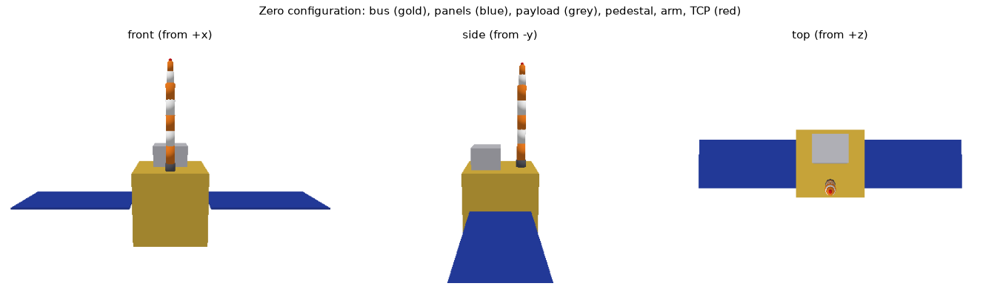
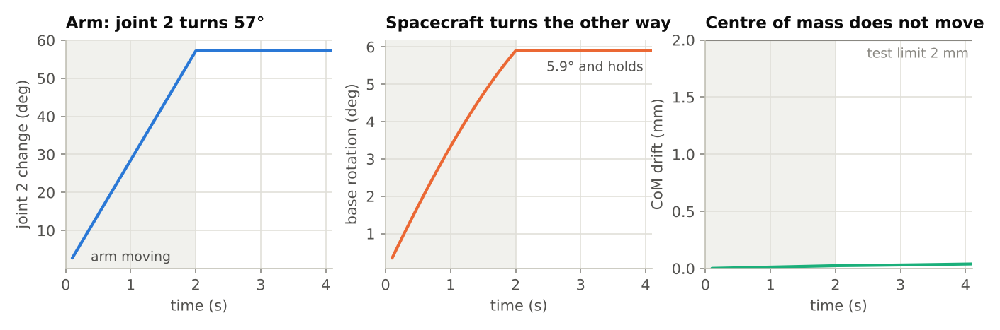
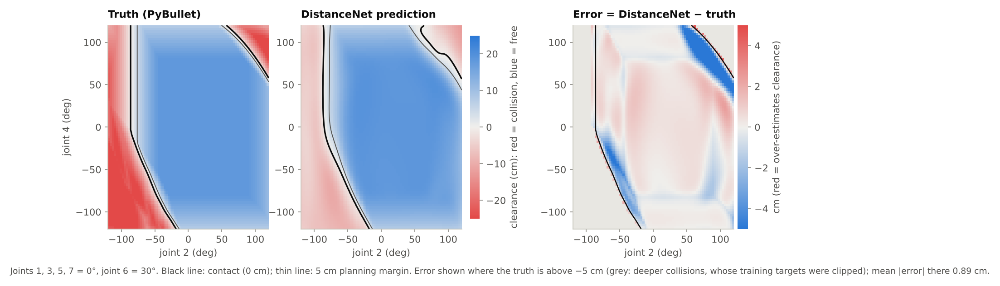
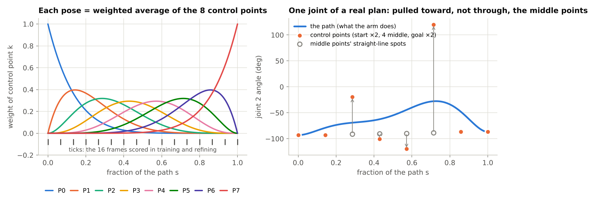
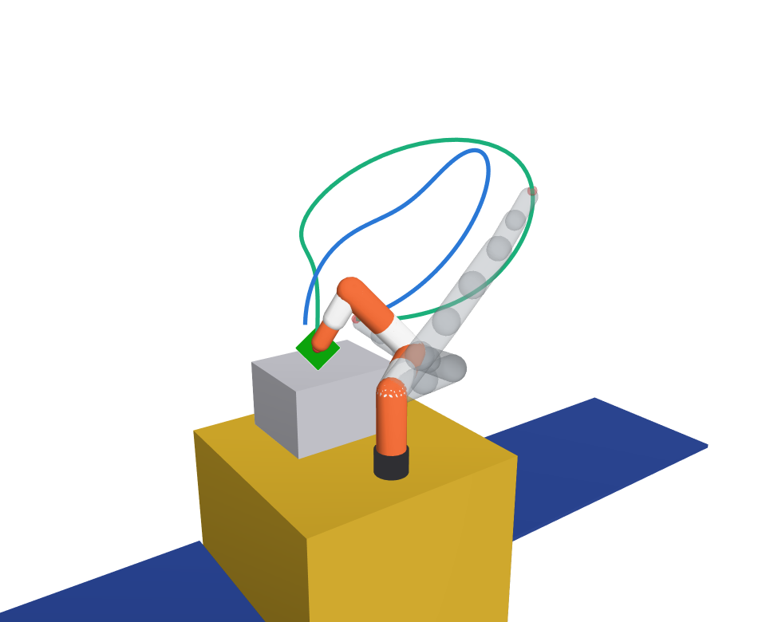
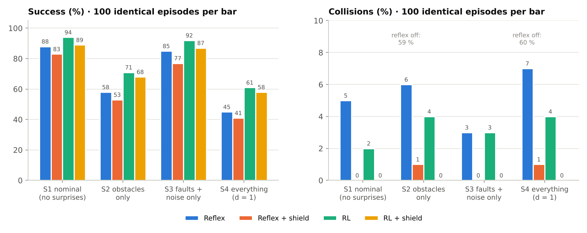
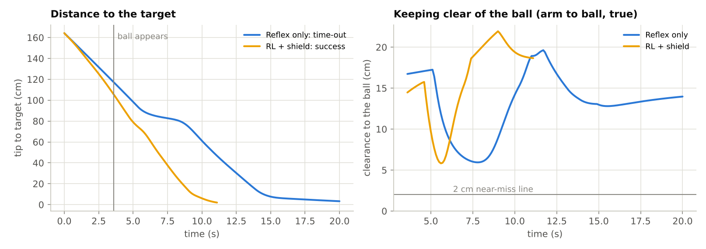

A guide to the teammate's code: what each part does, the equations behind it in plain words, and how it compares with the Neural IK project.
A small satellite floats in space with a 7-joint robot arm on its top deck. When the arm moves, the satellite turns slightly the other way (like a skater pushing off). The task has two levels:
The code is built from a few small pieces that each solve one sub-problem:
| Piece | Plain words | File |
|---|---|---|
| World model | Floating satellite + arm in PyBullet, zero gravity | robot_model.py, sim.py |
| Exact arm maths | Joint angles → tool-tip position (forward kinematics) | kinematics.py |
| Dataset | 200,000 poses, each with its exact distance to contact | datagen.py |
| DistanceNet | Neural "how far am I from touching, and which way is safer?" | models/distance_net.py |
| TrajNet | Neural "suggest a whole smooth path in one shot" | models/traj_net.py, losses.py |
| Planner | Guess → improve → polish → verify | planner.py |
| Reflex | Hand-written controller: aim, lean off, push off | control.py |
| RL correction | Tiny network that learns what the reflex gets wrong | rl/ppo_lag.py, envs/space_reach_env.py |
| Safety shield | Last check before the motors: is the next 0.2 s safe? | safety/shield.py |
| Symbol | Meaning | Symbol | Meaning |
|---|---|---|---|
| \(q \in \mathbb{R}^7\) | the 7 joint angles (radians) | \(\dot q\) | joint speeds (rad/s) |
| \(x_{\text{tip}}\) | tool-tip position (3 numbers, metres) | \(x^\*\) | target point |
| \(d_{\text{body}}, d_{\text{self}}\) | gap arm↔satellite, arm↔arm (negative = overlapping) | \(c(q)\) | combined clearance (the smaller gap, smoothed) |
| \(\nabla c\) | gradient: which way to turn the joints to gain clearance | \(J\) | Jacobian: how the tip moves when the joints move |
| \(P_0,\dots,P_7\) | Bézier control poses of a path | \(s\in[0,1]\) | position along the path (0 = start, 1 = goal) |
| \(a \in [-1,1]^7\) | the RL policy's output (correction) | \(\pi_\phi\) | the policy network with weights \(\phi\) |
| \(r_t,\; c_t\) | reward and cost at step \(t\) | \(\lambda\) | safety price (Lagrange multiplier) |
| \(\sigma(z)\) | sigmoid \(1/(1+e^{-z})\) | \(\|v\|\) | length of a vector |
The robot is generated from one settings file (configs/default.yaml): a 1 m cube bus (150 kg), two solar panels, a payload box and a 7-link arm made of capsules (18 kg). Total 212 kg; the arm is 8.5 % of the mass. Joint axes alternate z-y-z-y-z-y-z (shoulder 3, elbow 1, wrist 3), like a KUKA iiwa.

PyBullet runs with zero gravity and no damping, so nothing slows motion down and momentum is never lost. Starting at rest, the total momentum of the whole system stays zero:
In words: if the arm swings one way, the satellite must turn the other way so that the totals stay zero. The centre of mass does not move at all. In their test the arm turns joint 2 by 57° and the satellite turns 5.9° the other way.

Timing: physics runs at 240 Hz, decisions at 10 Hz, so one decision lasts 24 physics steps (0.1 s). Joints are velocity-controlled, at most 0.5 rad/s.
Forward kinematics (FK) answers: given the joint angles, where is the tool tip? It walks along the arm, one joint at a time. Start at the pedestal with position \(t\) and orientation \(R\) (a 3×3 rotation matrix), then for each joint \(i\):
Here \(\ell_i\) are the link lengths (24, 20, 20, 20, 20, 14, 12 cm), \(\ell_{\text{tool}} = 15\) cm and \(e_z = (0,0,1)\): "move along the link, then turn by the joint angle". It is written in PyTorch, so it is differentiable: the networks can learn through it. It matches PyBullet to 0.00012 mm.
The Jacobian \(J\) (3×7) says how the tip moves for small joint motions:
Because 7 joints control only 3 numbers (position), there are many ways to reach the same point. The "spare" freedom is called the null space; it is used later to lean the elbow away from the satellite without moving the hand.
No dataset exists for this robot, so it is generated. For each random pose \(q\), PyBullet measures exact, noise-free labels:
Effect: the share of training poses near a surface goes from 7.7 % to 30.9 %, so the network sees many examples exactly where decisions are made. Generation takes 38 s (0.19 ms per pose) and is byte-for-byte reproducible from the seed.
PyBullet can measure the gap, but only as a number (0.16 ms per pose) — it does not say which way to move to be safer. A small smooth network learns the gap and, through its gradient, the direction.
Sine and cosine are used because angles wrap around (+180° and −180° are the same). SiLU is a smooth activation, so the gradient \(\nabla c\) is smooth too. 135,938 parameters (0.5 MB).
In words: small mistakes are squared (be precise), big mistakes count only linearly (a few deep collisions cannot dominate), and mistakes near a surface count 10×. Targets are clipped to −5…+30 cm: beyond that no decision changes. Training: AdamW, learning rate \(2\times10^{-3}\) with cosine decay, 60 epochs, batch 1,024, 49 s on 4 CPU threads.
| Test (20,000 unseen poses) | Target | Result |
|---|---|---|
| Mean error, all poses | ≤ 1.0 cm | 0.68 cm |
| Mean error within 10 cm of contact | ≤ 2.0 cm | 1.22 cm |
| Collide / free called correctly | ≥ 97 % | 98.3 % |
| False "safe" (predicts > 3 cm while colliding) | ≤ 0.5 % | 0.12 % |

Input: the start pose and the target point. Output: 35 numbers that describe a smooth path.
Because \(\tanh\) is always between −1 and 1, every control pose lies inside the joint limits — whatever the network outputs.

A target point can be reached by infinitely many poses and paths; copying examples would average several right answers into a wrong one. So TrajNet is self-supervised: it lowers a score that checks the outcome.
552,483 parameters; 10,000 training steps × 256 queries; 3 min 11 s on 4 CPU threads. Alone it succeeds on 85 % of random and 66 % of hard queries.
The network is frozen; the 35 numbers \(\theta\) of this path are adjusted directly on the same score \(J\):
Adam is gradient descent with a per-number step size that adapts to how noisy each gradient is. Refining buys clearance, but it can pull the tip 1–2 cm off the target.
Only the goal pose moves, with damped least squares on the exact FK (10 iterations, \(\lambda = 0.01\)):
In words: "move the joints the smallest amount that moves the tip toward the target"; the \(\lambda^2 I\) term keeps steps sane near awkward (singular) poses.
PyBullet checks 100 poses along the path: every clearance \(> 0\), tip within 2 cm, all joints inside limits. If anything fails, plan once more with 100 refine steps (needed on 0.5 % of random queries).
| Method (same queries) | Random 200: success / collide | Hard 100: success / collide | Tip error | Time |
|---|---|---|---|---|
| Baseline: PyBullet IK + straight line | 92 % / 3.5 % | 0 % / 100 % | 0.14 cm | 1 ms |
| TrajNet alone | 85 % / 1.5 % | 66 % / 6 % | 1.02 cm | 2–5 ms |
| + refine | 56 % / 0.5 % | 54 % / 1 % | 1.85 cm | ≈ 90 ms |
| + polish (no refine) | 98 % / 1.5 % | 93 % / 7 % | < 0.01 cm | 8 ms |
| + refine + polish | 99.5 % / 0.5 % | 100 % / 0 % | < 0.01 cm | ≈ 99 ms |
| Full planner (+ verify, retry) | 100 % / 0 % | 100 % / 0 % | < 0.01 cm | 99 + 15 ms |
"Hard" = queries where the baseline collides (4.6 % of all queries). Refine buys clearance, polish buys precision; only together do they reach 100 %.

One episode ("mission"):
| Surprise | At full difficulty |
|---|---|
| Ball obstacle | 80 % of episodes; 5–12 cm; appears 1–5 s in, in the way; half of them drift ≤ 3 cm/s |
| Encoder bias | each joint reads up to ±2° wrong |
| Weak motors | each joint gives 70–100 % of the commanded speed |
| Encoder slip | 30 % of episodes: one joint reading jumps 3° |
| Sensor noise | encoders 0.1°, camera 5 mm, gyro 0.002 rad/s |
The robot only sees 56 measured numbers: joint readings and speeds, the camera vector tip→target, gyro spin, ball position and size, DistanceNet clearance and direction, and the previous and reflex commands.
Instead of learning everything from scratch (which gave 0 % success after 130k steps), a tiny network learns only a bounded correction on top of the reflex:
The correction has at most half the authority and fades out in the last 10 cm, so the reflex alone makes the precise final approach.
(The last 7 are the exploration noise levels.) It runs in 0.012 ms with NumPy.
\(D_t\) is the tip-to-target distance, so the first term pays for progress; the others discourage jerky corrections, wasted time and large corrections. Safety is not in the reward — it is a separate cost:
\(\hat A\) (the advantage) says whether an action turned out better than expected. The clip stops any single update from changing the policy too much. Advantages are estimated with GAE (\(\gamma = 0.99\), \(\lambda_{\text{GAE}} = 0.95\)):
\(\bar C\) is the average near-miss count per episode. If the policy goes over budget, the price \(\lambda\) rises and safety weighs more; if it stays under, \(\lambda\) falls. (In their runs \(\lambda\) never rose above 0.45, so most of the caution came from the reflex and the shield.)
Two value networks (\(V_r\) for reward, \(V_c\) for cost; 90 → 256 → 256 → 1, 89,345 parameters each) are used only during training. They see the 56 sensor numbers plus 34 hidden truths (true joint angles, encoder bias, motor gains, satellite orientation, true clearances, ball velocity, time left). The policy that flies sees only the 56 sensor numbers. Training: 3.0 M steps, 4 simulators in parallel, difficulty ramped from 0 to 1 over the first half, ≈ 1 h 45 min on 4 vCPU.
Every command passes a model-based filter before it reaches the motors. It predicts the pose 0.2 s ahead (2 control steps) for three step sizes:
If no step size is safe, the arm moves along \(\nabla h\) (escape), or stops. The ball gap is pure geometry: each arm link is a capsule (a line segment with radius \(r_{\text{link}}\)) and the ball a sphere (centre \(b\), radius \(r_b\)):
Cost of the shield: 0.18 ms per accepted command (3.3 ms when it has to escape). It intervenes on 9–15 % of steps.
Only the policy flies. It is exported as three matrix multiplications with the observation normalisation built in, so no PyTorch is needed on board:
| Component (1 CPU thread) | p50 | p99 |
|---|---|---|
| Policy (NumPy / ONNX) | 0.012 / 0.008 ms | 0.029 / 0.024 ms |
| Reflex | 0.30 ms | 0.59 ms |
| Shield (accepted / escape) | 0.18 / 3.3 ms | 0.38 / 4.5 ms |
| Whole control step incl. physics | 4.5 ms | 7.3 ms |
The control period is 100 ms, so the whole step uses under 8 % of the time budget.
100 identical episodes per controller and scenario (seeds 10000–10099, never used for training):
| Scenario | Reflex | Reflex + shield | RL | RL + shield |
|---|---|---|---|---|
| S1 no surprises | 88 % / 5 % | 83 % / 0 % | 94 % / 2 % | 89 % / 0 % |
| S2 ball only | 58 % / 6 % | 53 % / 1 % | 71 % / 4 % | 68 % / 0 % |
| S3 faults + noise | 85 % / 3 % | 77 % / 0 % | 92 % / 3 % | 87 % / 0 % |
| S4 everything | 45 % / 7 % | 41 % / 1 % | 61 % / 4 % | 58 % / 0 % |
Each cell: success / collisions. Time to reach in S4: 11.2 s (reflex) → 8.2 s (RL + shield).


Both projects follow the same pattern — a fast neural guess, an exact classical finish, an independent PyBullet check, and a learned correction on top of a classical controller — but they solve different versions of the problem.
\(C\) is a frozen yes/no self-collision classifier (6 → 64 → 64 → 1). Its probability is a soft penalty; it does not measure distance.
| Neural IK (yours) | STP_Spacearm (teammate) | |
|---|---|---|
| Robot / world | xArm6, 6 joints, fixed base, kinematic motion | 7-joint arm on a 212 kg free-floating satellite, real physics |
| Level 1 target | full pose: position and orientation | point: position only |
| Level 1 output | one goal joint configuration | whole Bézier path + goal joints |
| Learning style | supervised (copy known joint angles) | self-supervised (score the outcome) |
| Collision knowledge | yes/no classifier, self only, 98.4 % | distance in cm + direction, body + self, 0.68 cm error |
| Classical finish | LM with restarts and collision-free retry | Adam refine + DLS polish |
| Check | final configuration in PyBullet | 100 poses along the path in PyBullet |
| Level 1 result | 100 % of 2,000 within 1 mm and 1°, 0 % collisions, 12.9–37.8 ms | 100 % of 300 within 2 cm, 0 % collisions, ≈ 0.1 s |
| Level 2 algorithm | PPO residual on a potential field | PPO-Lagrangian residual on a reflex + safety shield |
| Level 2 hardest case | 84 % reached / 2 % collided (200 episodes) | 58 % reached / 0 % collided (100 episodes) |
| Part | Equation |
|---|---|
| Momentum | \(\sum m_i v_i = 0,\quad \sum (I_i\omega_i + m_i r_i\times v_i) = 0\) |
| Forward kinematics | \(t \leftarrow t + R e_z \ell_i,\ \ R \leftarrow R\,\mathrm{Rot}(\text{axis}_i,q_i),\ \ x_{\text{tip}} = t_7 + R_7 e_z \ell_{\text{tool}}\) |
| Jacobian | \(\Delta x_{\text{tip}} \approx J(q)\,\Delta q\) |
| Near-contact data | \(q' = q + \mathcal{N}(0, 0.05^2)\), keep if \(|\min d| < 5\) cm |
| Clearance | \(c = -\tau\log(e^{-d_b/\tau} + e^{-d_s/\tau}),\ \tau = 1\) cm |
| DistanceNet loss | \(\operatorname{mean}[w\,\ell_\beta(\hat d - d)],\ \beta = 2\) cm, \(w = 10\) near contact |
| Joint-limit squash | \(q = m + h\tanh(u)\) |
| Bézier path | \(q(s) = \sum_{k=0}^7 \binom7k s^k(1-s)^{7-k}P_k\) |
| TrajNet score | \(100\|\mathrm{FK}(q_g)-x^\*\|^2 + 1000\,\overline{\max(0,0.05-c)^2} + 0.1\sum\|\Delta q\|^2\) |
| Refine | \(\theta \leftarrow \theta - \text{Adam}(\nabla_\theta J)\) |
| IK polish | \(\Delta q = J^{\mathsf T}(JJ^{\mathsf T} + \lambda^2 I)^{-1}(x^\* - x_{\text{tip}})\) |
| Reflex | \(\dot q = J^+v + (I - J^+J)k_{\text{null}}w_s\nabla c + k_{\text{obs}}w_o\nabla d_{\text{ball}}\) |
| Residual command | \(\dot q_{\text{cmd}} = \operatorname{clip}(\dot q_{\text{reflex}} + 0.5\,\text{fade}\,a)\) |
| Reward | \(10(D_{t-1}-D_t) - 0.01\|\Delta a\|^2 - 0.005 + 5[\text{success}] - 0.02\|a\|^2\) |
| PPO | \(\mathbb{E}[\min(\rho \hat A, \operatorname{clip}(\rho, 0.8, 1.2)\hat A)]\) |
| Lagrangian | \(\hat A = (\hat A_r - \lambda \hat A_c)/(1+\lambda),\ \ \lambda \leftarrow \operatorname{clip}(\lambda + 0.05(\bar C - 1), 0, 10)\) |
| Shield | \(h = \min(c - 6\text{ cm},\ g_{\text{ball}} - 5\text{ cm}) \ge 0\) at \(q + s\,\dot q_{\text{cmd}}\,0.2\text{ s}\) |
| Deployed policy | \(a = \tanh(W_3\tanh(W_2\tanh(W_1\hat o + b_1)+b_2)+b_3)\) |